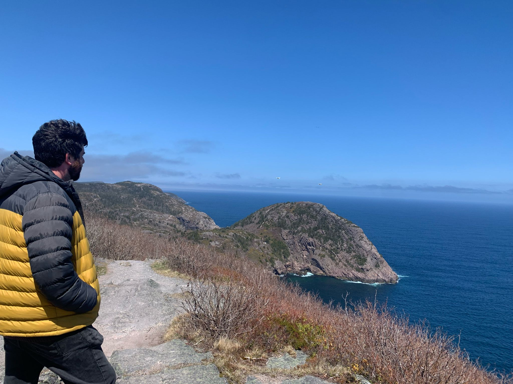

Dr J. Joseph Perry

Assistant Professor
Room 9.20, Department of Linguistics, Run Run Shaw Tower, University of Hong Kong, Pokfulam Road
jjp45@hku.hk
About me
I'm Joe Perry (/dʒoː ˈperi/ [dʒɜʉ ˈpʰɛɹi]), and I'm currently an Assistant Professor in the Department of Linguistics at the University of Hong Kong. I'm originally from England, specifically a small town near Oxford, and was educated at SOAS University of London (BA Nepali and Linguistics , MA Language Documentation and Description) and the University of Cambridge (PhD). I'm accustomed to he/him/his pronouns but am happy if you feel like using others! I've written this page in plain html because it fills me with nostalgic feelings.
Research
I have a rather eclectic set of research interests within linguistics, but perhaps two adjectives I would use to describe them are (grammatically) holistic and description-led. I'm interested in describing underdocumented languages, especially Sino-Tibetan varieties, and have worked on a range of languages in Nepal and China. I also work on theoretical questions, within a broadly Minimalist/Distributed Morphology framework. I'm particularly interested in syntax and its interfaces with phonology, morphology and semantics, drawing on less well-known languages to explore key issues on the boundaries between components of grammar. I have an amateur interest in historical linguistics and am an enthusiastic learner of (bits and pieces of) languages.
Peer-reviewed papers
2025. "On the Irish Agreement Pattern and its Parallels'', Journal of Linguistics (FirstView)
2025 (with Xuhui Hu). "Multifunctionality and Contextual Realization: A case study in Yixing Chinese", Linguistic Variation 25(1): 1-42
2024. "Agreement resolution in ditransitives: An undiscussed pattern from Sampang." Snippets 46: 8-12.
2018 (with Bert Vaux). "Vedic Sanskrit Accentuation and Readjustment Rules", in Cerrone et al (eds.) From Sounds to Structures, pp. 266-294. Berlin: De Gruyter Mouton.
2018 (with Xuhui Hu). "The Syntax and Phonology of Non-Compositional Compounds in Yixing Chinese", Natural Language and Linguistic Theory 36(3): 701-742.
Manuscripts and Preprints
Mapping and Pruning: An Approach to Prosodification
(with Arthur Lewis Thompson and Jonathan Havenhill) Shakou Kakga
Works in progress or under review
Under revision (with R. Marcelo Sevilla and Chen Chuwen). "On the (non-)existence of Xiang: Subgrouping and Lexico-Morphological Features"
A Sketch Grammar of Sampang.
(with Ren He) Long-distance ziji as a shifty indexical.
(with Xuhui Hu) Light Verbs and the Syntax of Event Structure.
(with Shanti Ulfsbjorninn) P=MP? What phonology needs to look like to do without morphophonology: two case studies.
(with Xuhui Hu) Syntactic Interfaces: A Case Study in Yixing Chinese (monograph).
PhD Thesis
Tone and Prosodic Constituency in Gyalsumdo, PhD thesis, University of Cambridge. [Supervisor: Bert Vaux; Examiners: Ian Roberts and Andrew Nevins; Happy to provide a copy on request.]
Teaching
Like my research interests, my teaching experiences have been rather eclectic. At HKU I've taught courses in syntax at introductory, intermediate and advanced levels (LING2050 Grammatical Description, LING2032 Syntactic Theory, LING2073 Advanced Topics in Syntax), courses relating to language documentation and description (LING2061 Linguistic Fieldwork, LING2075 Issues in Language Documentation), LING3003 Linguistic Field Trip) and typology at BA and MA levels (LING2013 Language Typology, LING6021 Language Types and Universals). I've also done some teaching of historical linguistics, phonetics, phonology, morphology, semantics and sociolinguistics.
Blog
At some point I intend to put an informal blog here, to discuss various ephemeral things I notice about languages.